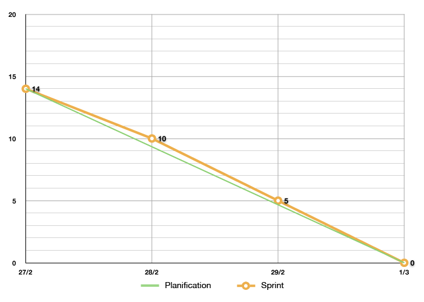
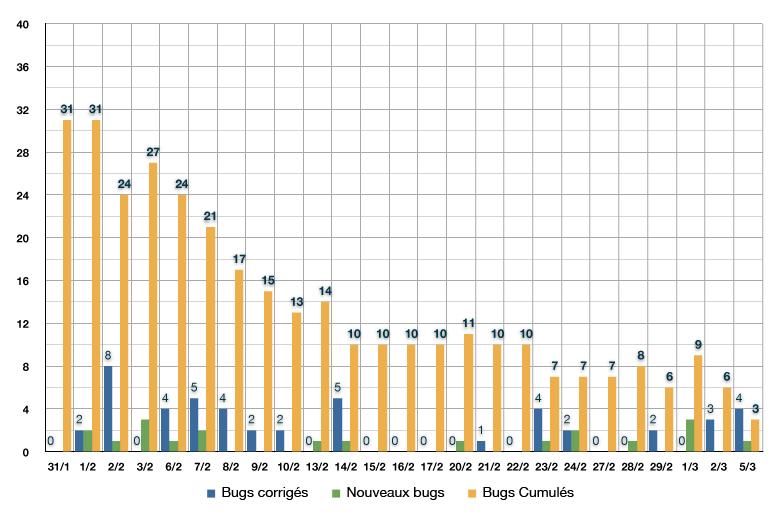
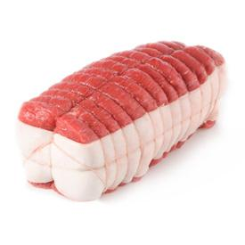
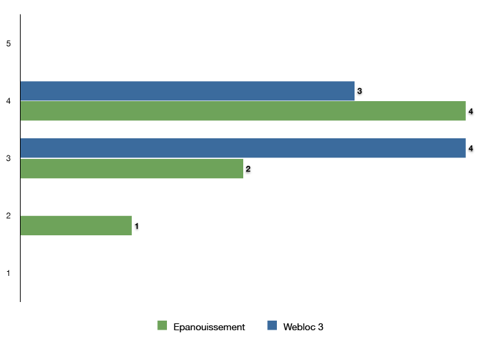
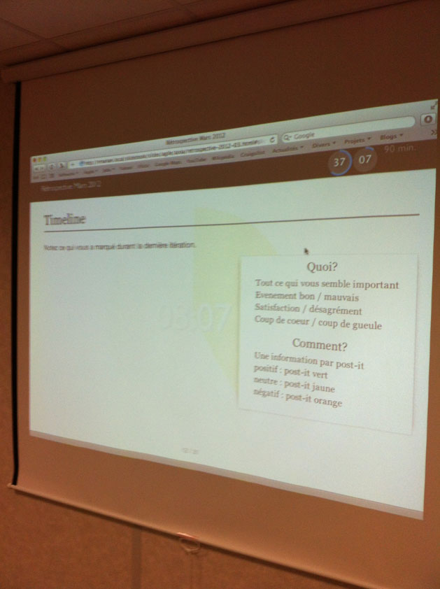
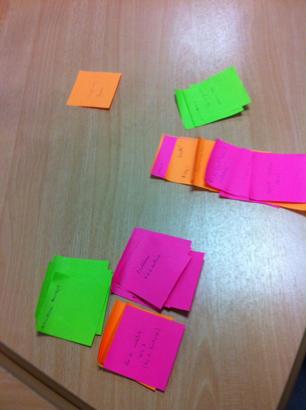

Rétrospective
Mars 2012
Introduction
Contrat
- Concision
- Respect
- Ecoute
- Participation
- Pas de tomate c'est ma première
Plan
Tour de table
- Niko-Niko du jour
- Sur quoi avez-vous travaillé depuis la dernière rétro?
- Qu'attendez-vous de celle-ci? De quoi voudriez-vous parler?
Feedback
Notez votre ressenti de 1 à 5 sur les sujets suivants :
- Confiance dans le projet webloc3 (choix techniques, état d'avancement, perspectives, ...)
- Epanouissement personnel au sein de l'équipe
- 1 : Alarmiste
- 2 : Pessimiste
- 3 : Moyen
- 4 : Bon
- 5 : Excellent
Explication en 2 ou 3 mots
Bilan précédent
- fhardy bugs manager -> todo@aixia-developpement.com
- Mise en place de tests fonctionnels -> jvinai tests manager
- Déplacement des bureaux
- Généralisation du pair-programming et du code review
- Mise à jour de l'application démo en 2.1.6
- Interruption d'un sprint dont le périmètre change
Sprint "produits externes"

Bugs Webloc 2.1

Niko Niko
| Philippe | 5 | 9 | 23 | 37 |
| Nathanël | 2 | 2 | 15 | 19 |
| François | 3 | 10 | 24 | 37 |
| Stéphane | 6 | 9 | 19 | 34 |
| Julien | - | 12 | 22 | 34 |
| Mathieu | - | 5 | 32 | 37 |
| Frédéric | 2 | 2 | 12 | 16 |
Timeline
Notez ce qui vous a marqué durant la dernière itération.
Quoi?
- Tout ce qui vous semble important
- Evenement bon / mauvais
- Satisfaction / désagrément
- Coup de coeur / coup de gueule
Comment?
- Une information par post-it
- positif : post-it vert
- neutre : post-it jaune
- négatif : post-it orange
Vote
Vous avez à votre disposition 3+ et 3-.
Pour chaque thématique principale, distribuez vos +/- selon votre avis :
- Mettez un + sur ce qui vous semble positif ou prioritaire
- Mettez un - sur ce qui vous semble négatif
Langue de bois
A partir des post-it les plus négatifs, chacun à tour de rôle doit :
- dire en une phrase l'inverse de ce qu'il pense
- n'utiliser que des termes positifs
Analyse
Root Cause Analysis : cherchons à remonter à l'origine de la problématique.
A tour de rôle, chercher une cause possible à la cause précédemment trouvée.
Plan d'action : définissons des actions concrètes pour améliorer la prochaine itération.
A tour de rôle, suggérer une solution.
ROTI : Return On Time Invested

Vote à doigts levés
Chacun vote en assignant une note de 1 à 5 doigts sur la rétrospective
1 = j'ai perdu mon temps... 5 = c'était génial, ne nous quitte pas
Conclusions - Feedback
L'équipe est :
- globalement soudée et satisfaite
- mitigée sur le projet webloc 3
Conclusions - Timeline
La timeline a révélé plus particulièrement trois problématiques :
- Les sprints ont tous été plus ou moins marqués par des écueils.
- Le projet webloc 3 a pris du retard et l'équipe manque de visibilité.
- Julien semble un peu en retrait.

Support visuel pour l'activité
Consignes et décompte du temps à titre indicatif.

93 post-it sur la timeline
36 rouges, 22 oranges, 35 verts
Conclusions - Problématiques
Sprints webloc 2
- Recettes incomplètes ou faussées sur un environnement de dev unique.
Projet webloc 3
- Retard dû à des problématiques techniques, beaucoup de R&D et peu d'expérience sur symfony2.
- Manque de visibilité. Impression de tâtonner.
- Phase avant-projet trop succinte?
Equipe
- Interrogation sur les perspectives d'évolution du pôle web.
- Préoccupations / déceptions.
- Moins d'interaction de l'équipe webloc 3 avec Julien.
Conclusions - Plan d'action
Projet webloc 2
- Effectuer une recette exhaustive dans un environnement "neutre" (autre que les machines de dev).
- Confier une recette à un "bêta" testeur extérieur au projet.
- Etendre la démarche devops aux acteurs business/marketing (ex: F. Delord pour la partie e-business).
- Organiser une réunion avant-projet (même très brève) réunissant dev, admin sys et e-business.
- Intégrer au morning les acteurs business/marketing concernés (ex: F. Delord pour la partie e-business).
Projet webloc 3
- Ecrire la documentation technique du projet webloc 3.
- Se référer aussi souvent que possible au cookbook.
- Capitaliser l'expérience et les connaissances (plus de dialogue, revue de code, présentation, ...).
- Expérimenter davantage autour de symfony2 et de ses composants.
- Impliquer davantage le product owner.
- Définir une roadmap afin d'avoir plus de visibilité.
Equipe
- Implication de tous les membres de l'équipe autour du projet webloc 3.
- Julien pourrait travailler au développement de l'API webloc 3 en attendant de renforcer le pôle web.
Merci
- rétrospectivement de m'avoir supporter pendant 4 ans
- présentement de votre indulgence pour cette rétrospective
- dans un futur proche de prendre soin de mes oreilles
/